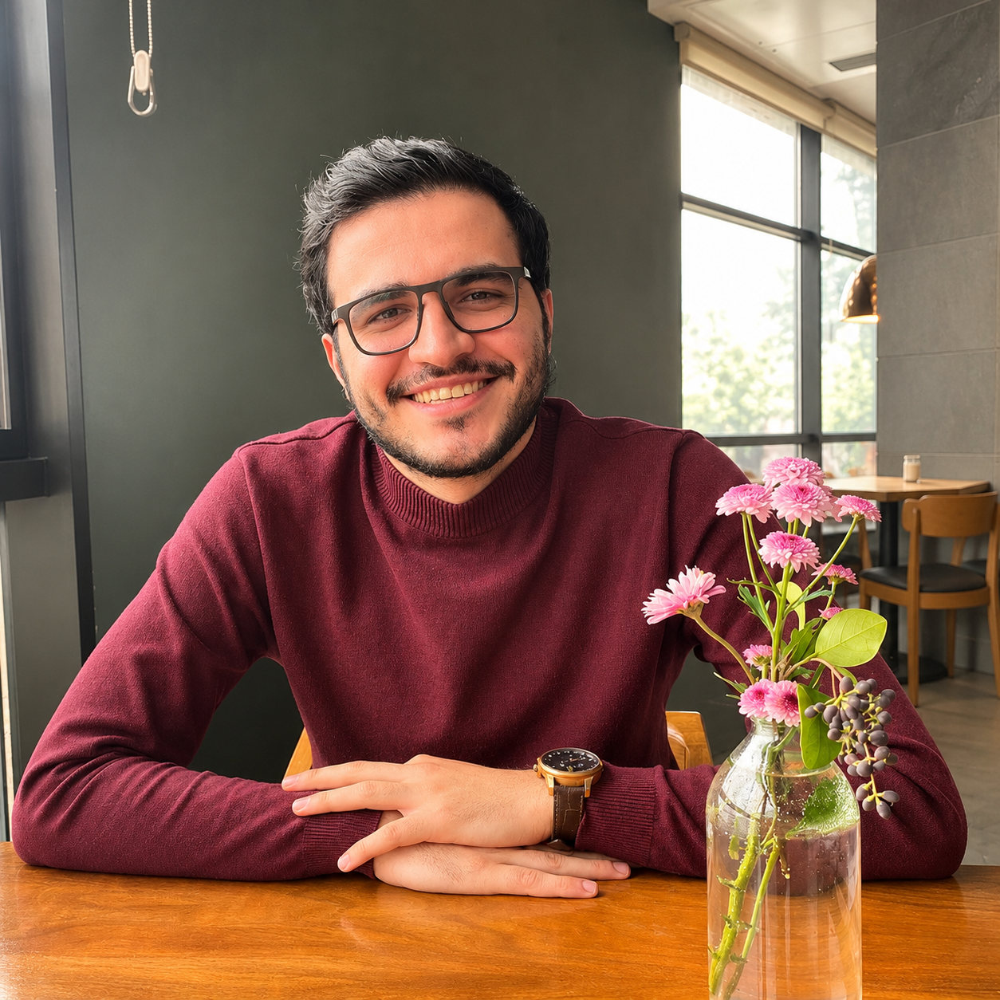

Aliasghar
Bagheri Tirtashi
AI in Healthcare · Neural Engineering
My research focuses on neural–muscular signal decoding, multimodal EEG–sEMG learning, and robust artificial intelligence for rehabilitation and wearable biosignals.

About Me
I am an electrical engineer specializing in bioelectric engineering, with an M.Sc. from Sharif University of Technology and a B.Sc. from the University of Tehran. My research lies at the intersection of AI in healthcare, biomedical signal processing, and neural engineering.
Under the supervision of Prof. Mehran Jahed, I developed attention-based frameworks for EEG–sEMG fusion and investigated robust hand gesture recognition under simulated muscle-fatigue conditions. My earlier research explored microsaccades and visual processing in rodents.
I am interested in PhD research involving reliable and interpretable AI for physiological time series, multimodal biosignal learning, brain–computer interfaces, and intelligent rehabilitation technologies.
Research Interests
Academic Journey
B.Sc. · University of Tehran
Electrical Engineering (Bioelectric); undergraduate microsaccade research.
M.Sc. · Sharif University of Technology
Electrical Engineering (Bioelectric); EEG–sEMG fusion and neuromuscular decoding research.